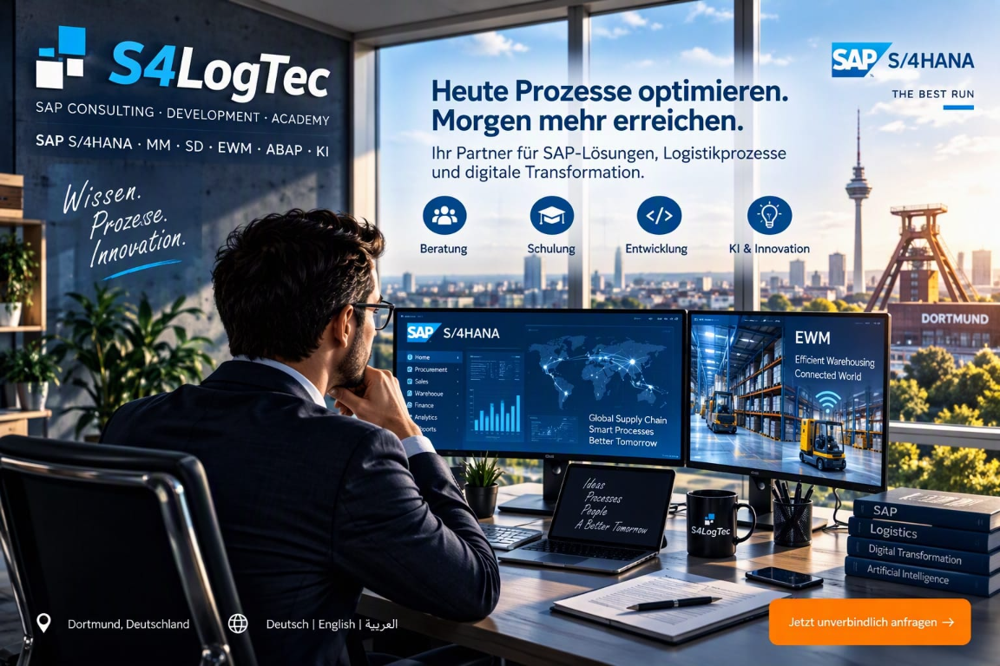
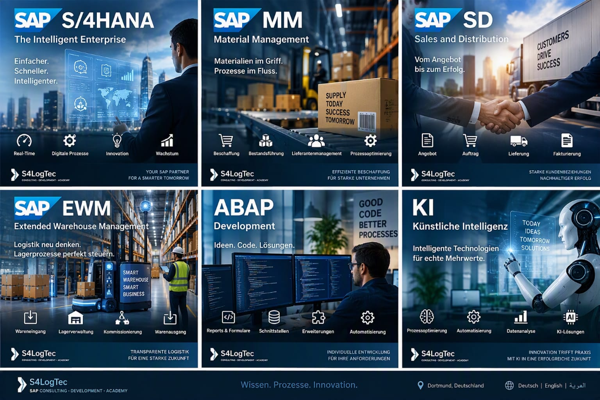
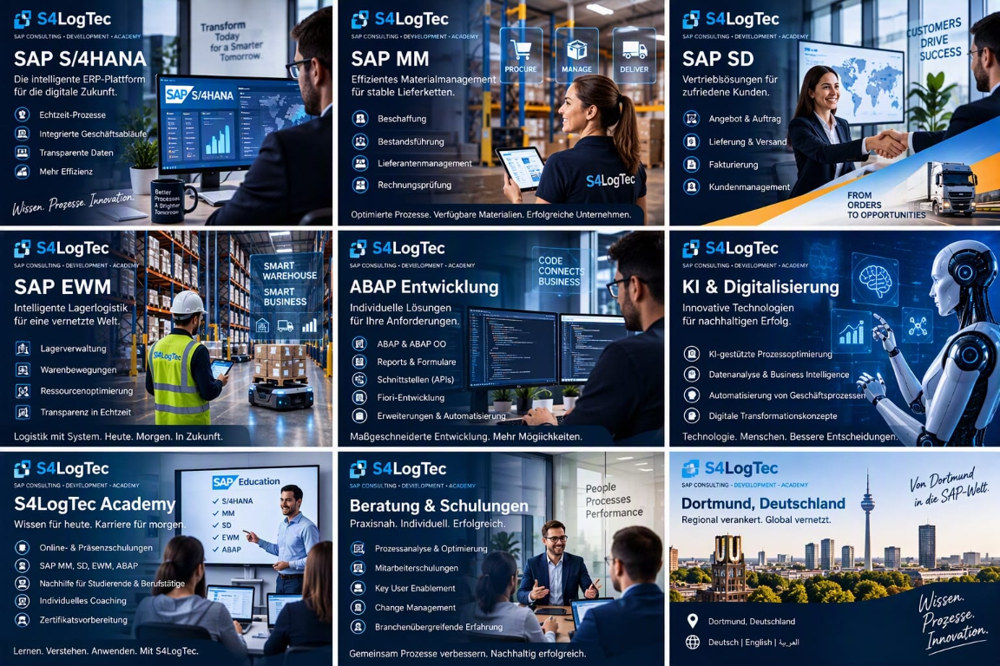

SAP-Beratung
Unterstützung rund um SAP S/4HANA sowie die Prozesse und Module MM, SD und EWM.
SAP CONSULTING · DEVELOPMENT · ACADEMY
Beratung, Entwicklung und Wissenstransfer rund um SAP. Praxisnah, verständlich und auf die Menschen hinter den Prozessen ausgerichtet.
SAP-Leistungen entdeckenS/4HANA · MM · SD · EWM

SAP KNOW-HOW FÜR DIE PRAXIS
S4LogTec verbindet SAP-Beratung mit Softwareentwicklung und Weiterbildung. Für Unternehmen, die ihre SAP-Prozesse weiterentwickeln wollen, und Menschen, die ihr Wissen praktisch ausbauen möchten.
S4LOGTEC · SAP S/4HANA · MM · SD · EWM · ABAP · KI
Unterstützung rund um SAP S/4HANA sowie die Prozesse und Module MM, SD und EWM.
Softwareentwicklung mit ABAP und neue Möglichkeiten durch den gezielten Einsatz von KI.
Online- und Präsenzschulungen für Unternehmen sowie SAP-Nachhilfe für Studierende und Berufstätige.

S4LOGTEC ACADEMY
Praxisorientierte SAP-Schulungen und Mitarbeiterschulungen, passend zu Team und Bedarf.
Individuelle SAP-Nachhilfe für Studierende und Berufstätige, verständlich und am Lernziel orientiert.
S/4HANA, MM, SD, EWM und ABAP: Inhalte, die sich an realen Aufgaben orientieren.

S4LOGTEC · SAP CONSULTING & ACADEMY
Beratung, Entwicklung oder Schulung: Schreib uns, woran du arbeitest und wobei du Unterstützung suchst.
s4logtec@gmail.comSTANDORTDortmund, Deutschland ↗
SPRACHENDeutsch · English · العربية